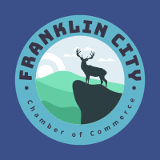

Welcome to Franklin, Tennessee
Chamber of Commerce Website Planning Document
franklincitychamber.com
☰
Home
Color Scheme
Typography
Scenarios
Purpose
To improve the business climate and quality of living for residents, workers and visitors.
To attract local businesses to join
To gather business owners together for the betterment of the community
Logo
